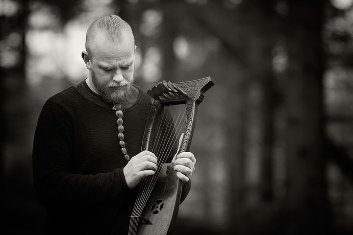

Wardruna is a Norwegian music constellation dedicated to creating musical renditions of ancient Norse and Nordic traditions. We use a broad selection of both traditional and historical Nordic instruments. Non-traditional instruments and other sources of sound such as trees, stones, bones, water and fire are used to enhance the nature of the theme being ‘portrayed’ in each case. Thorough research and serious study form an important foundation for our music, but the ultimate intention is not to copy or recreate music from any specific time period. We take thoughts, tools and methods from the past and use them to create new music which builds on the contemporary as well as the ancient.
Main composer Einar Selvik initiated Wardruna in the early 2000s together with Lindy-Fay Hella and former member Gaahl. In 2009 we released our debut album and first part of the Runaljod trilogy featuring musical renditions based on the runes. Each of the three albums is focused around eight of the twenty-four Proto-Norse runes, more commonly known as the Elder Futhark. The runes are interpreted on their own premises, although here their various qualities are placed in the wider context of various ancient Nordic traditions relating to nature and human and spiritual relations. For this reason, some of the recordings have also been made in various locations or under circumstances that have particular significance for the rune in question. Bearing in mind that there will always be space for disagreement when working with the runes, it is important to emphasize that whether these mysterious symbols are approached by artists, scholars or modern sages, the truth of the matter is that there are so many things about their esoteric use that we can never be certain about. Our approach is artistic, scholarly and mystical, our songs working out from the core meaning of each rune implied by the sparse original sources we have at hand, building on those qualities that lie behind the whole concept and purpose of Wardruna: sowing new seeds and strengthening old roots. The albums of the trilogy are:
After years of giving acoustic concerts and lectures, performing Wardruna songs and creations made for the TV-show Vikings on his own, Einar Selvik decided in 2018 to record the album Skald based on parts of that material. Skald was recorded live in the studio with the intention of capturing the raw and uncompromising energy of a live performance rather than aiming for a flawless and polished expression. It set out to give voice to the ancient craft that once lay at the heart of the Norse oral traditions, presented as it takes shape in the hands of a humble contemporary skald today.
Wardruna’s fifth full-length album Kvitravn (White-Raven) is scheduled for release January 22nd, 2021. The album musically continues where the Runaljod trilogy left off, yet it marks a distinct evolution in our sound. The album features a broad selection of both traditional and historical instruments such as Kravik-lyre, Trossingen-lyre, Taglharpa, Sotharpa, Langeleik, Crwth, Goat-horn, Lur, Bronze-lur, flute, Moraharpa and the record also features guest appearances by a small group of prominent traditional singers, spearheaded by Kirsten Bråten Berg, one of the most important custodians of Norwegian traditional song. Throughout eleven songs, Kvitravn discusses Northern sorcery, spirit-animals, shadows, nature and animism, the wisdom and meanings of certain myths, various Norse spiritual concepts, and the relation between sage and songs.
As a live band Wardruna operates in various constellations of personnel but the standard configuration the last years has been: